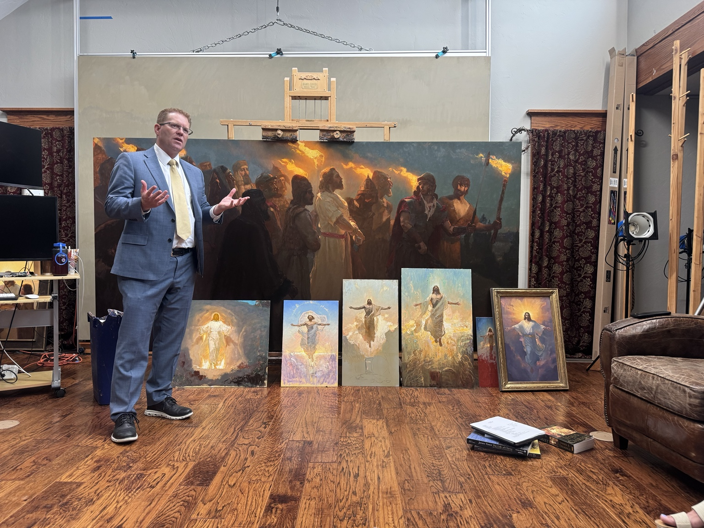
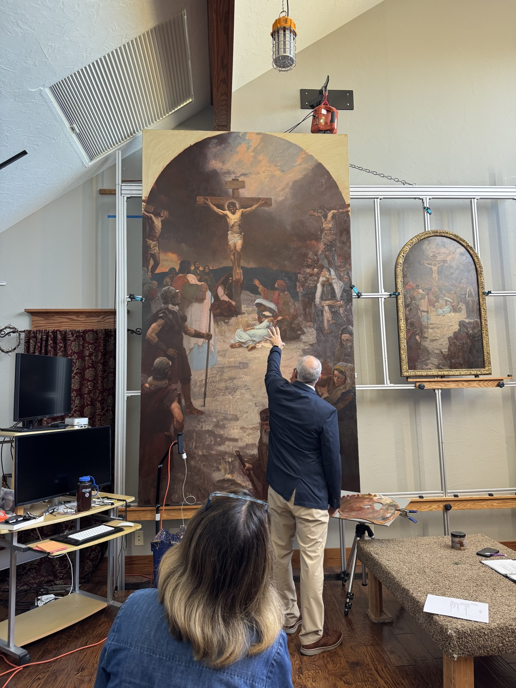
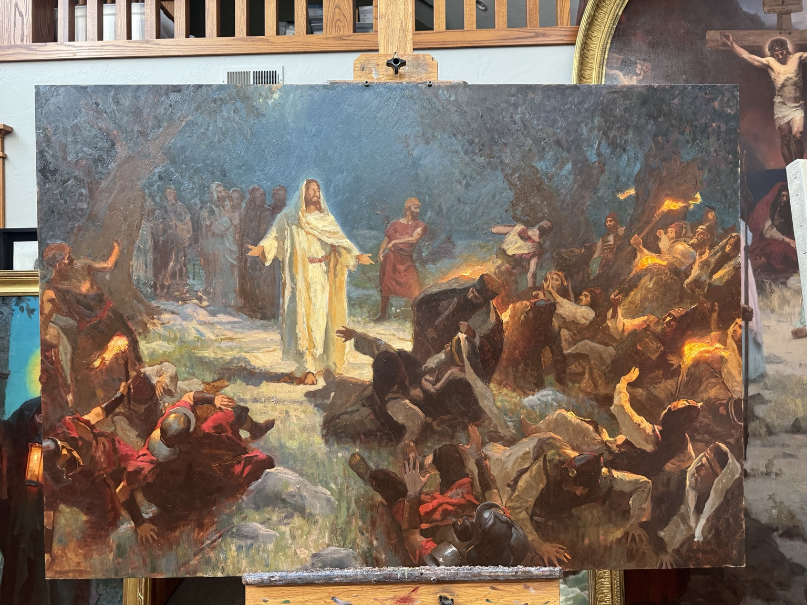
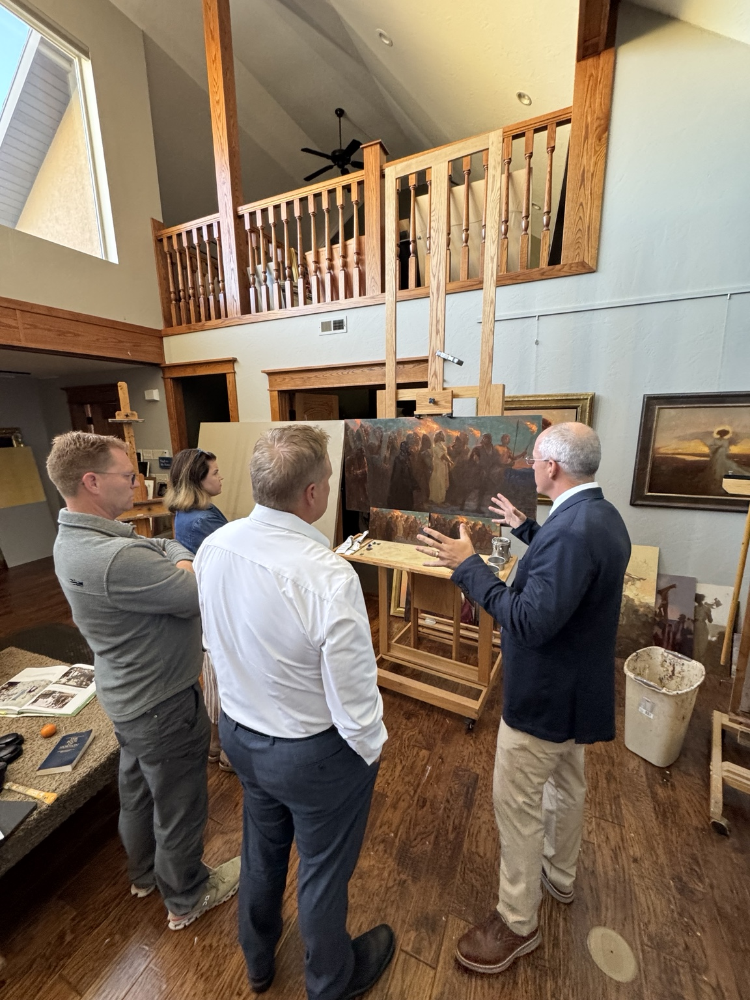
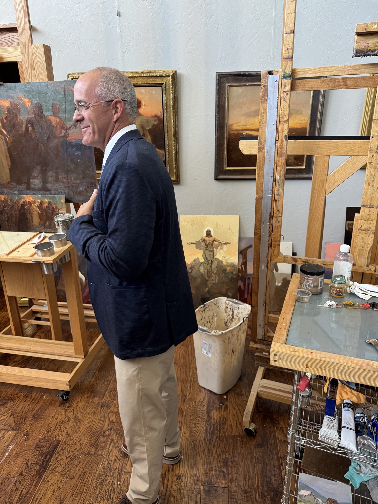

THE VISION
To help the world see Him in a way it never has before.
He Is Risen is creating a monumental visual account of the final week of the Savior’s mortal life through the work of internationally recognized artist Michael Malm.
Some scenes will be reimagined from new perspectives. Others will depict moments rarely—or perhaps never—given this scale on canvas. The aim is simple: invite all people of every tradition, culture, and background to encounter Jesus Christ through beauty, story, and sacred art.

THE COLLECTION
Painted at a scale
meant to be experienced.
Each painting is a chapter in one sacred story: love, sacrifice, suffering, triumph, and Resurrection.
ENTER THE COLLECTION →WORKS IN PROGRESS
The story is being created now.



Finished high-resolution artwork will replace process imagery as the collection is prepared for public exhibition.

THE ARTIST
Michael Malm
A lifetime of painting the human spirit—and pointing toward the divine.
Michael Malm is known for narrative realism, luminous figurative work, and sacred imagery that feels deeply human. For He Is Risen, he is undertaking paintings so large and complex that only a handful can be completed each year.
This is not simply a series of paintings. It is a years-long artistic undertaking.
INSIDE THE STUDIO →THE JOURNEY
Witness the creation
before the world sees it.
From early sketches and theological research to models, composition studies, full-scale canvases, framing, conservation, and exhibition design, the journey toward 2030 is part of the story.
The Collection Grows
Three paintings completed. New monumental works enter production.
Creation & Preparation
Paintings, scholarship, exhibition design, partnerships, fundraising, and venue development.
The World Exhibition
The collection begins its journey to prestigious cultural venues and audiences around the world.
THE 2030 WORLD EXHIBITION
A global exhibition.
A lasting impact.
Our goal is to bring this collection to exceptional museums, galleries, cultural institutions, and sacred spaces around the world—creating encounters with Christ that cross borders, traditions, and generations.
JOIN THE MISSION
Help bring
Christ to the world.
FOUNDING SUPPORT
Be part of the story
before it reaches the world.
Philanthropic support will make possible the creation of the paintings, scholarly and curatorial work, conservation, exhibition design, transportation, insurance, venue partnerships, and the 2030 international tour.
Begin a Giving Conversation →Online giving integration will be added when the organization’s preferred donation processor is connected.